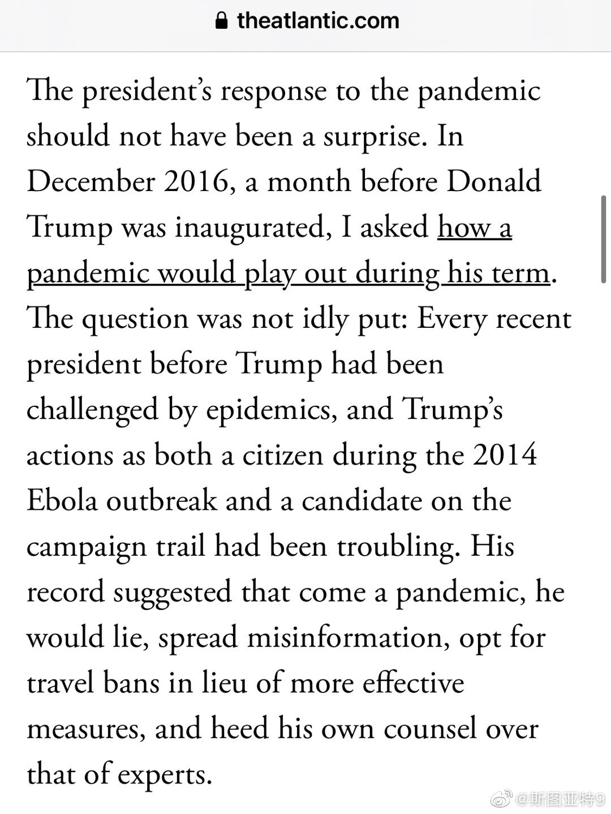

看了Ed Young 2016年引用的这篇写于2016年的特朗普抗疫的虚拟作品 网页链接 这篇2016年的文章在当时肯定让多数人觉得危言耸听，但2020年发生的事情，真感觉现实比虚拟还虚拟。虚拟作品预测对了几点：实验室制造的阴谋论盛行、特朗普关闭边境、不听取CDC等专家建议、用疫情为理由和中国打贸易战、拒绝反思做错的地方。但现实更惊悚得多——特朗普拒绝承认疫情存在、亲自散播阴谋论、在疫情还没到顶点就宣布抗疫胜利…… 回想2016年这么多危言耸听的预测最后都成了现实。2020年……
原来今年异常活跃的《大西洋》月刊记者Ed Young在四年前特朗普刚当选时候还写过这么一篇： 网页链接 他刚刚发了一篇文章提到了他这篇，说到特朗普的表现就和当初的预言一模一样——撒谎、散布假消息、用旅行禁令取代更有效的抗疫手段、不相信专家的建议。如果特朗普再次当选，未来还是会一样。 网页链接

 网页链接 这篇2016年的文章在当时肯定让多数人觉得危言耸听，但2020年发生的事情，真感觉现实比虚拟还虚拟。虚拟作品预测对了几点：实验室制造的阴谋论盛行、特朗普关闭边境、不听取CDC等专家建议、用疫情为理由和中国打贸易战、拒绝反思做错的地方。但现实更惊悚得多——特朗普拒绝承认疫情存在、亲自散播阴谋论、在疫情还没到顶点就宣布抗疫胜利…… 回想2016年这么多危言耸听的预测最后都成了现实。2020年……
网页链接 这篇2016年的文章在当时肯定让多数人觉得危言耸听，但2020年发生的事情，真感觉现实比虚拟还虚拟。虚拟作品预测对了几点：实验室制造的阴谋论盛行、特朗普关闭边境、不听取CDC等专家建议、用疫情为理由和中国打贸易战、拒绝反思做错的地方。但现实更惊悚得多——特朗普拒绝承认疫情存在、亲自散播阴谋论、在疫情还没到顶点就宣布抗疫胜利…… 回想2016年这么多危言耸听的预测最后都成了现实。2020年……